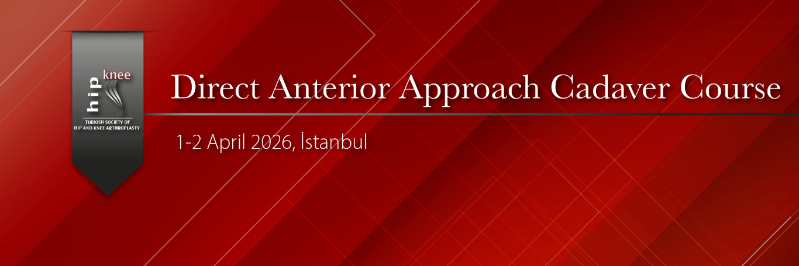

TURKISH HIP AND KNEE ARTHROPLASTY ASSOCIATION
DIRECT ANTERIOR APPROACH CADAVER COURSE
April 1–2, 2026
Acıbadem CASE Cadaver Laboratory
SCIENTIFIC PROGRAM
April 1, 2026
08:30–08:35 Welcome İbrahim Tuncay
08:35–08:45 Introduction Javad Parvizi
08:45–09:00 Evolution of the Anterior Approach
09:00–09:15 Why the Anterior Approach?
09:15–09:30 Implant and Instrument Selection
09:30–09:45 Preoperative Planning, Patient Positioning, Draping
09:45–10:00 Direct Anterior Approach to the Hip
10:00–10:30 Coffee Break
10:30–10:45 Acetabular Preparation and Cup Placement
10:45–11:00 Femoral Releases and Broaching
11:00–11:15 Trialing, Leg Length and Offset Adjustment
11:15–11:30 Prevention and Management of Intraoperative Complications
11:30–11:45 Prevention and Management of Postoperative Complications
12:00–12:30 Discussion
12:30–13:30 Lunch Break
13:30–13:45 Anterior Total Hip Arthroplasty Using Robotic Technique (MAKO)
13:45–14:00 Anterior Total Hip Arthroplasty Using Robotic Technique (ROSA)
14:00–14:45 Anterior Approach in Complex Primary Cases
14:45–15:00 Extended Anterior Approach and Revision Surgery
15:00–15:30 Coffee Break
15:30–15:45 Muscle-Sparing PAO via the Anterior Approach
15:45–16:00 FAI and Labral Surgery via the Anterior Approach
16:00–16:30 The Anterior Approach from an Evidence-Based Medicine Perspective
16:30–17:00 Discussion
April 2, 2026
08:30–11:00 Direct Anterior Total Hip Arthroplasty on Cadavers
11:00–11:30 Coffee Break
11:30–12:00 Discussion
12:00 Closing Remarks
